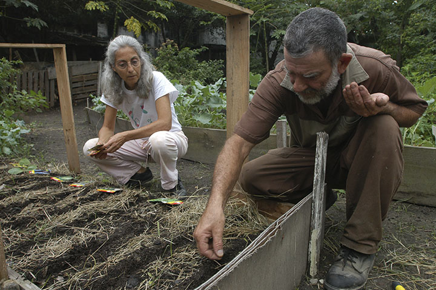

Módulo 3 | Aula 1 A Literacia para a Saúde no cotidiano da Atenção Primária à Saúde
Ações para auxiliar a população na adoção de comportamentos saudáveis e na adesão do tratamento

Ter conhecimento sobre modo de vida saudável é relevante na busca da qualidade de vida para todos os segmentos populacionais. Assim, há necessidade do trabalho dos diferentes atores para a promoção da saúde, prevenção de doenças e o controle e tratamento de enfermidades (ARDENGHI, 2020).
É relevante salientar que a Rede de Atenção à Saúde (RAS) é orientada pelos princípios da universalidade, acessibilidade, vínculo, continuidade do cuidado, integralidade da atenção, responsabilização, humanização, equidade e participação social, e essencial para o trabalho coletivo e para promover saúde (BRASIL, PNPS, 2018).
A análise da nuance das determinações e determinantes sociais presentes na realidade de cada população é fundamental para o atendimento dos cidadãos com o propósito de cuidar da vida. Então, que ferramentas podem ser utilizadas para a escolha de comportamentos saudáveis tendo como base das reflexões a LS?
A Promoção da LS requer respeito aos diversos cenários do cotidiano das pessoas. Para tanto, é necessário que sejam oferecidos instrumentos que possibilitem o acesso à informação para que as pessoas possam fazer escolhas mais conscientes, gerir e investir em suas opções (FARINELLI et al., 2017). O trabalho da equipe de saúde é apoiar as decisões e comportamentos que promovam a saúde. A partir desta constatação pode-se recomendar:
Cada etapa do ciclo de vida (iremos estudar posteriormente) - infância, adolescência, fase adulta e velhice - requer o entendimento de suas peculiaridades, bem como o que a pessoa vivencia em seu cotidiano, que não é descolado da história de vida pessoal e coletiva.
Com a utilização de uma linguagem acessível, fornecer as informações de saúde de maneira objetiva. Para tanto, deve-se:
- Adotar terminologias precisas e padronizar os materiais produzidos de forma criativa.
- Envolver os cidadãos na criação de materiais produzidos para avaliar se estão compreensíveis para os próprios.
- Cuidar para que haja distribuição de materiais em diferentes espaços de saúde e na coletividade, para que atinja pessoas em diferentes contextos sociais, como: vídeos, podcasts, panfletos, programas de rádio, conversas interessantes realizadas por diferentes profissionais com foco no paradigma salutogênico conforme exemplificado anteriormente.
- Criar propostas de promoção da LS com os atores envolvidos no sentido de implementar e aumentar as oportunidades de aprendizagem em todos os níveis de ensino.
- Acesso à informação: facilitar os meios para que as pessoas tenham acesso a mais informações e apoio à sua saúde. As ferramentas digitais podem ser um recurso relevante para usuários, profissionais de saúde e demais organizações da sociedade, possibilitando inclusive a ampliação dos níveis de Literacia Digital em Saúde da população (SOUSA et al., 2020).
Verificar por meio de ferramentas avaliativas a compreensão das pessoas sobre as informações de saúde transmitidas, com suas vantagens e desvantagens.
Elaborar e desenvolver campanhas direcionadas para conscientizar as pessoas sobre a relevância do seu papel na gestão de sua própria saúde e na efetivação de seus direitos à saúde, por meio de rodas de conversa com usuários, profissionais de saúde, pessoas da comunidade que tenham acesso às pessoas menos favorecidas. Nestes momentos, deve-se enfatizar a importância da promoção da LS.
Envolver os usuários no desenvolvimento de formulários e outros materiais para melhor responder às necessidades específicas dos diferentes públicos atendidos na rede de saúde, principalmente os grupos com baixo nível de literacia.
Deve contemplar os princípios da comunicação em saúde. De forma prática, sugere-se:
- Evitar a utilização de jargões técnicos comuns entre as várias áreas do saber e que afastam as pessoas que apresentam dificuldades de compreensão.
- Utilizar imagens com textos, ou mesmo sozinhas, para exemplificar informações de saúde, porém sem substituir a explicação verbal; limitar o número de informações, falar com calma e não tudo de uma vez.
- Oferecer regularmente ajuda no preenchimento de formulários e outros documentos, quando pertinente.
- Proporcionar e incentivar que as pessoas estejam à vontade para fazer perguntas; elas devem sentir-se confortáveis para colocar questões, saber que estas vão ser ouvidas. Ou seja, deve-se praticar a escuta qualificada.
É preciso que a pessoa faça adesão ao tratamento de forma autônoma, o que muitas vezes constitui um grande desafio de abordagem para os profissionais de saúde. Assim, deve-se procurar:
- Garantir que a medicação prescrita seja a mais adequada e que esteja sendo usada ou será utilizada corretamente.
- Envolver o usuário na tomada de decisão sobre sua medicação. Neste sentido, garantir que qualquer alteração será acompanhada de explicação e entendimento.
- Promover a utilização de medicamentos acessíveis, gratuitos ou de fácil aquisição, como por meio das farmácias da APS, do estado ou credenciadas ao Programa Farmácia Popular do Brasil.
- Lembrar que pessoas com determinadas enfermidades como as DCNT, entre outras, estão mais expostas à linguagem técnica sobre a sua condição; e aquelas com reduzidos níveis de literacia apresentam maior dificuldade para identificar e aceitar sua condição e procurar apoio.
A autogestão é fundamental para a melhoria nos resultados nas DCNT. Certamente, aumentar os níveis de Literacia para a Saúde influenciam de forma significativa e promissora na autogestão, enquanto os níveis reduzidos de LS poderão afetar a capacidade que a pessoa possui de tomar decisões quanto a sua condição de saúde. Portanto, é necessário informações relevantes e aceitáveis, conforme exposto acima. (PORTUGAL, 2019)
A partir destas recomendações podemos apontar alguns procedimentos que podem ser utilizados pela equipe da APS e contribuir para que a pessoa/usuário dos serviços de saúde pratique o autocuidado, ou seja, faça escolha de comportamentos saudáveis e possa aderir aos possíveis tratamentos.
O autocuidado é compreendido como a capacidade que uma pessoa possui para distinguir fatores que devem ser controlados ou administrados para regular seu próprio funcionamento e desenvolvimento, no sentido de desempenhar de forma autônoma as atividades que visam à promoção da saúde, à prevenção de agravos e aos cuidados com a doença, com vistas à busca por qualidade de vida (TOSSIM, 2016).
As equipes de APS devem motivar a pessoa/usuário ao autocuidado, estabelecer uma relação de diálogo entre os saberes de cuidar de si e os saberes de cuidar do outro. Essa relação vai se manifestar ao eleger os problemas prioritários, fixar metas, criar planos conjuntos de cuidado, checar o cumprimento de metas, identificar as dificuldades em cumpri-las e resolver as demandas de competência dos serviços de saúde.
É necessário enfatizar que autocuidado é de responsabilidade da pessoa, de sua família, mas também é de responsabilidade do profissional e das instituições de saúde (BRASIL, 2014).
O envolvimento de forma interdisciplinar dos profissionais e demais atores sociais são relevantes para a promoção da saúde da população. Promover a Literacia para a Saúde contribui para ampliar conhecimentos e propicia reflexões sobre a emancipação dos cidadãos com melhorias na qualidade de vida. Para tanto, estratégias com ações transformadoras são relevantes, com vistas a fortalecer a capacidade de escolhas conscientes e a tomada de decisões para cuidar de si, da família e da comunidade.